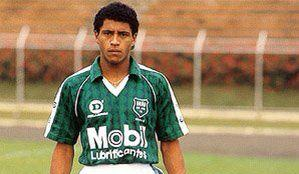
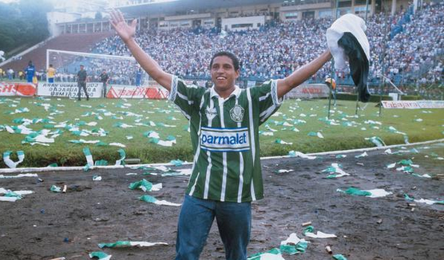
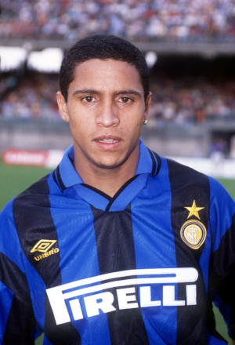
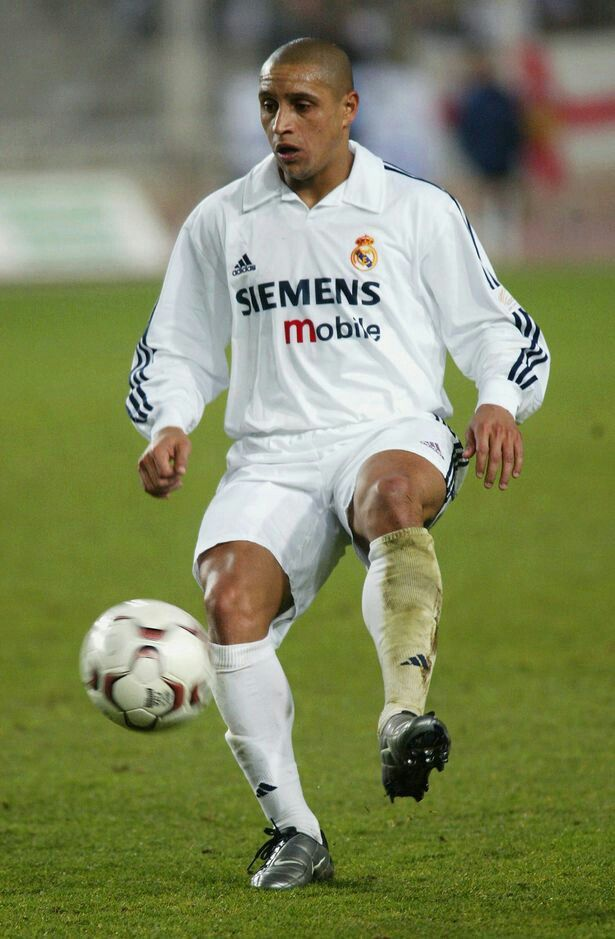
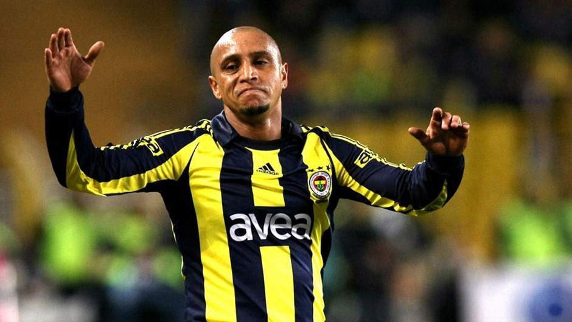
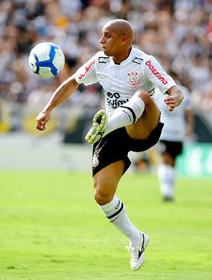
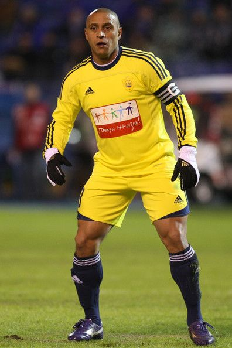
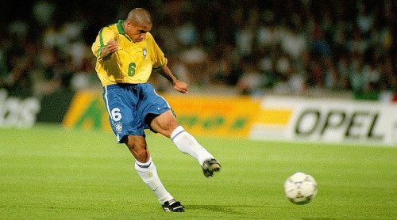
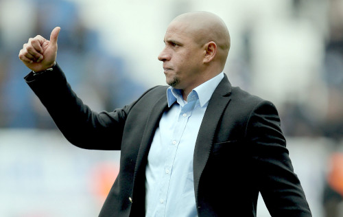

Infância
Nascido em uma fazenda de café, em Garça, interior de São Paulo, Roberto Carlos é filho de lavradores. Seu nome é uma homenagem ao cantor Roberto Carlos, do qual seu pai e o próprio lateral são fãs. Em 1981 foi morar em Cordeirópolis, também interior paulista, e, jogando por um time de uma fábrica de aguardentes, foi convidado para atuar, pela cidade, nos Jogos Abertos do Interior. Sete anos depois, em 1988, Roberto iniciaria sua carreira no União São João, de Araras, São Paulo.
Carreira Como Jogador
Início
Roberto Carlos começou sua carreira de futebol no União São João, da cidade de Araras. Com apenas 16 anos de idade, passou a atuar como lateral-esquerdo titular da equipe e, em virtude do bom futebol, foi convocado para a Seleção Brasileira Sub-20.
Atlético Mineiro
Em 1992, mais precisamente no mês de agosto, a então revelação do União São João de Araras, ainda com 19 anos, foi levada para participar de uma excursão na Europa com o time do Atlético. O Galo viajou com uma equipe mista para a disputa dos amistosos, pois estava priorizando a disputa da primeira Copa Conmebol. A excursão serviu de teste para diversos jogadores, e aqueles que se destacassem poderiam ser integrados em definitivo ao grupo principal. Roberto Carlos não participou dos dois primeiros jogos, realizados na Itália, contra Lázio e Torino, em ambos o Atlético perdeu por 2 a 0. O primeiro jogo pelo Galo foi em Lérida (Espanha), no dia 27 de agosto, em partida válida pelo Troféu Cidade de Lérida. O time mineiro perdeu por 2 a 1 para o Lleida, com Roberto Carlos atuando os 90 minutos. Nos dois jogos seguintes, realizados em Logronho, o lateral também atuou os 90 minutos: em 29 de agosto o Atlético perdeu por 2 a 1 para o Logroñés, e no dia seguinte foi novamente derrotado, desta vez por 3 a 1 para o Athletic Bilbao; as partidas foram válidas pelo Troféu Cidade de Logroño.
Antes de se retirar do futebol, Roberto Carlos agradeceu ao Atlético pela oportunidade:
“Devo a todos os clubes pelos quais atuei, até mesmo ao meu pequeno União São João de Araras, pois a gente nunca deve esquecer nossas origens. Mas devo minha vinda para a Espanha ao Galo, que me deu a oportunidade de atuar no time em 1992, numa excursão ao país. Por isso, fiz questão de deixar bem claro e agradeço a esse importante clube por ter me aberto as portas aqui na Europa.”
— Roberto Carlos, numa declaração feita após o jogo festivo entre antigos craques do Real Madrid e do Liverpool no Santiago Bernabéu
Palmeiras
Despertou a atenção dos grandes clubes brasileiros e foi contratado em 1993 pelo Palmeiras, que amparado pelo contrato de cogestão com a multinacional Parmalat, montou uma equipe repleta de craques para por fim a um tabu de 16 anos sem títulos. No mesmo ano, ajudou a equipe a quebrar o jejum de conquistas. Foram três títulos no mesmo ano: o Campeonato Paulista, o Torneio Rio São Paulo e o Campeonato Brasileiro. Em 1994, conquistou o bicampeonato paulista e brasileiro pela equipe alviverde. Disputou 185 jogos, marcando 20 gols em sua passagem pelo Palmeiras.
Seu último jogo pelo Palmeiras foi na decisão do Campeonato Paulista de 1995.
Internazionale
Sua excepcional passagem pelo Palmeiras acabou despertando a cobiça do futebol europeu. Em meados de 1995, Roberto Carlos seguiu para a Itália, onde havia acertado com a Internazionale por 7 milhões de dólares, uma quantia considerável à época.
O brasileiro chegou com moral à Inter de Milão. Na Itália, todos já haviam ouvido falar de suas perigosas subidas ao ataque, além do potente chute de perna esquerda e da velocidade. O problema é que o inglês Roy Hodgson, técnico do clube nerazzurri naquela época, achou que essas eram as características ideais para um atacante, e passou a usar o brasileiro como ponta-esquerda, o que acabou fazendo com que Roberto Carlos não rendesse o esperado.
“Meu problema na Inter era o Hodgson. Ele queria que eu jogasse como atacante, quando na verdade eu era defensor. Eu prefiro ter espaço na minha frente para correr ao invés de ser um ponta e ficar lá na frente. Para mim, sempre foi melhor ter 80 metros de campo para jogar do que 20. Eu não gostava do sistema e da posição que Hodgson queria que eu jogasse. Ele me queria bem na linha de frente, rígido e parado. A Copa América (1995) estava chegando e eu estava jogando de lateral-esquerdo na Seleção, então queria jogar nessa posição na Inter também. Então, tive que ir embora, porque não podia atrapalhar minhas chances de jogar pelo Brasil.”
— Roberto Carlos, em entrevista à ESPN Brasil, sobre sua curta passagem na Inter de Milão
Mesmo assim, logo em sua primeira partida no novo clube, Roberto Carlos marcou o gol da vitória sobre o Vicenza por 1 a 0. Ao todo, foram 34 jogos e sete gols marcados.
Massimo Moratti, presidente do clube à época, arquitetou uma transferência até hoje lembrada na Itália: trocou Roberto Carlos, então com 23 anos, com o Real Madrid, pelo atacante Iván Zamorano, à época com 30 anos, e mais uma compensação financeira.
Real Madrid
Atuou pelo Real Madrid durante onze anos, e atingiu o auge de sua carreira neste clube, jogando um total de 584 partidas e marcando 71 gols.
Neste período, Roberto conquistou importantes títulos e notoriedade na Seleção Brasileira, onde também foi titular absoluto. Fez parte da era dos Galácticos, ao lado de estrelas como Zinédine Zidane, David Beckham, Raúl, Iker Casillas, Luís Figo e Ronaldo. Foi no Real que fez um de seus gols mais memoráveis: o chamado "Gol Impossível" na partida contra o Tenerife, pelo Campeonato Espanhol de 1997–98, em que acertou um potente e veloz chute da linha de fundo, a um ângulo de 179º da trave.
Com o Real, faturou três vezes a Liga dos Campeões da UEFA: 1997–98, 1999–00 e 2001–02. Sempre fundamental ao time, foi votado pela UEFA como o melhor lateral-esquerdo em 2002 e 2003.
Em janeiro de 2006, estabeleceu o novo recorde de estrangeiro com mais partidas pela La Liga, quebrando o recorde anterior de 329 partidas do argentino Alfredo Di Stéfano.
Sendo um dos jogadores mais consistentes do elenco e um dos que há mais tempo estavam no clube, Roberto Carlos foi duramente criticado por errar num jogo contra o Bayern de Munique, válido pelas oitavas de final da Liga dos Campeões da UEFA de 2006–07, que resultou no gol mais rápido da história do torneio, marcado por Roy Makaay, com menos de um minuto de jogo. O fato culminou na desclassificação do Real Madrid.
Insatisfeito e desgastado com a torcida, no dia 9 de março de 2007 ele anunciou que não renovaria seu contrato. Em sua última temporada pelo clube, conquistou o título da La Liga, o quarto título espanhol durante sua passagem pelo Real. Roberto deixou a equipe com o posto de estrangeiro com mais partidas pelo clube, com 527 jogos no total. Posteriormente acabou sendo superado pelo também brasileiro Marcelo e pelo francês Karim Benzema.
Fenerbahçe
Aos 34 anos e com pouco mercado nos grandes centros europeus de futebol, Roberto Carlos foi anunciado pelo Fenerbahçe no dia 5 de junho de 2007. O lateral assinou um contrato de dois anos com o clube turco. Foi apresentado oficialmente no estádio do clube, frente à milhares de fãs.
Em sua primeira partida oficial com o Fener, venceu um dos grandes rivais do clube, o Beşiktaş. Marcou seu primeiro gol pela equipe durante uma partida contra o Sivasspor, em 25 de agosto. O gol foi feito após uma cabeçada, e este se tornou apenas o terceiro gol de cabeça em toda a sua carreira.
Pouco mais de dois anos depois, no dia 7 de outubro de 2009, Roberto anunciou que deixaria o Fenerbahçe após o final de seu contrato em dezembro do mesmo ano. Ele se ofereceu para retornar ao Real Madrid e jogar gratuitamente, embora também houvesse interesse de vários clubes do futebol brasileiro. Jogou sua última partida pelo clube no dia 17 de dezembro, sendo ovacionado e aplaudido de pé pelos torcedores turcos após o fim da partida.
Corinthians
No dia 18 de novembro de 2009, após várias especulações sobre seu destino, Roberto Carlos foi anunciado como o primeiro grande reforço do Corinthians para a Copa Libertadores da América de 2010. O lateral-esquerdo foi atraído ao Timão devido ao seu projeto para montar um time forte em 2010. Assinou o contrato e foi apresentado no dia 4 de janeiro.
“Foi a maior contratação para 2010 no futebol brasileiro.”
— Andrés Sanchez, sobre a contratação de Roberto Carlos
Estreou no dia 20 de janeiro, na vitória por 2 a 1 sobre o Bragantino, em partida válida pelo Campeonato Paulista. Apesar da idade avançada, Roberto Carlos vinha mostrando um excelente preparo físico e tendo atuações muito elogiadas no clube paulista, fato que culminou em várias especulações sobre seu retorno à Seleção Brasileira. Entretanto, não foi convocado.
Começou bem o ano de 2011, seu segundo pelo Timão: no dia 16 de janeiro, marcou um gol olímpico na estreia do Corinthians pelo Campeonato Paulista, contra a Portuguesa. Entretanto, após a precoce eliminação na primeira fase da Copa Libertadores, em 11 de fevereiro, Roberto Carlos anunciou sua saída do Corinthians. Segundo o jogador, por ter recebido ameaças vindas de alguns torcedores, ele optou por fazer uma rescisão amigável com o clube, alegando que esta seria a melhor decisão para ele e sua família.
Anzhi Makhachkala
No dia seguinte, em 12 de fevereiro, o lateral-esquerdo acertou por dois anos com o Anzhi Makhachkala, da Rússia, num contrato de 15 milhões de reais/ano. Apesar de recém-chegado ao time, recebeu a faixa de capitão.
Em uma de suas primeiras partidas pelo Anzhi, contra o Zenit, foi alvo de racismo. Ainda antes do início da partida, durante o aquecimento dos jogadores, um fotógrafo flagrou um torcedor adversário mostrando uma banana para o jogador. Em junho, o episódio se repetiu: próximo ao final de uma partida contra o Krylya Sovetov, quando a vitória do Anzhi por 3 a 0 já estava praticamente definida, um torcedor lançou uma banana perto de Roberto Carlos, que a pegou do chão, mostrou ao árbitro, tirou a braçadeira de capitão e se retirou de campo.
Em entrevista no dia seguinte ao jogo, Roberto Carlos se mostrou indignado e chegou até a alegar que não tinha mais vontade de voltar a jogar pelo clube:
"Estou profundamente chateado. Não tenho nenhuma vontade de voltar a jogar. Estou indignado pelo asqueroso comportamento do torcedor que, com sua ação, não só me insultou, mas também a todos em campo e a todo o futebol russo. Atos deste tipo não deviam ser tolerados em países civilizados. Saí porque me senti desapontado, não tinha mais o desejo de permanecer no jogo. Eu faria o mesmo se estivesse outro placar. Já é o segundo caso similar em um curto período de tempo que jogo na Rússia. Isso também me machuca porque a maioria das pessoas no país é acolhedora e benevolente com os jogadores, incluindo os estrangeiros. Infelizmente, existem também esses idiotas. Espero que a Federação Russa, a UEFA e a FIFA tenham a reação adequada para este incidente desagradável. Coisas assim não devem ser toleradas em países civilizados."
No dia 28 de setembro de 2011, o treinador Gadzhi Gadzhiev foi demitido; em seu lugar Roberto Carlos assumiu interinamente a função de treinador, além de continuar como jogador na equipe russa.
Aposentadoria
No dia 1 de agosto do ano seguinte, o lateral anunciou oficialmente sua aposentadoria aos 39 anos de idade, assumindo a função de diretor de futebol do Anzhi. Antes, já havia iniciado sua carreira também como auxiliar técnico do clube.
Seleção Brasileira
É o terceiro jogador que mais vezes vestiu a camisa canarinho; tem um total de 125 jogos pela Seleção Brasileira, perdendo apenas para Cafú e Daniel Alves.
Marcou o gol mais bonito de sua carreira no dia 3 de junho de 1997, ao cobrar uma falta a 35 metros de distância do gol, na partida em que a Seleção Brasileira empatou com a Seleção Francesa por 1 a 1 na partida de abertura do Torneio da França. A curva feita pela bola foi tanta que já foi objeto de inúmeros estudos científicos. Este lance ficou conhecido como "Banana shot".
Vice-campeão na Copa do Mundo FIFA de 1998, realizada na França, quatro anos depois Roberto Carlos foi convocado por Luiz Felipe Scolari para a Copa do Mundo FIFA de 2002. O lateral-esquerdo foi um dos principais nomes da conquista do pentacampeonato, chegando a marcar um golaço de falta na goleada por 4 a 0 contra a China.
Na Copa do Mundo FIFA de 2006, após a derrota por 1 a 0 para a França nas quartas de final, Roberto Carlos foi muito criticado, na época, por não ter marcado Thierry Henry enquanto arrumava seu meião no lance do gol que culminou na eliminação do Brasil. Roberto chegou a afirmar que nunca mais jogaria pela Seleção, mas se ofereceu em uma entrevista caso a Seleção precisasse de um lateral-esquerdo experiente.
Carreira Como Treinador
Anzhi Makhachkala
Roberto Carlos teve uma breve passagem como treinador interino do Anzhi Makhachkala no início de 2012. Mais tarde ele criticou o clube, renunciando seu cargo ao lado do gerente Guus Hiddink.
Sivasspor
Em junho de 2013 foi anunciado como técnico do Sivasspor, da Turquia, para a disputa da Süper Lig. Teve uma boa primeira temporada, quando o clube terminou a temporada em quinto lugar do campeonato nacional. No dia 21 de dezembro de 2014, Roberto acertou sua rescisão de contrato, após um péssimo começo na temporada 2014–15, deixando o clube na penúltima colocação do Campeonato Turco. Em virtude de seu bom desempenho pelo Sivasspor na temporada 2013–14, Roberto foi eleito o melhor treinador da Turquia em 2014.
Akhisar Belediyespor
No dia 2 de janeiro de 2015, Roberto Carlos foi anunciado pelo Akhisar Belediyespor, também da Turquia.
Al-Arabi
No dia 2 de junho de 2015 foi anunciado como novo técnico do Al-Arabi, do Catar, pretendendo contribuir para o crescimento do futebol no país que seria sede da Copa do Mundo FIFA de 2022. Porém, não chegou a atuar como treinador da equipe.
Delhi Dynamos
No dia 5 de julho de 2015, o brasileiro mandou uma mensagem em inglês para a torcida do Delhi Dynamos, dizendo estar animado com o projeto no futebol indiano. Depois, falou através de seu Instagram:
"Quero informar que sou o novo treinador do Delhi Dynamos, na Índia. Um projeto interessante de um clube em crescimento. Muito feliz por fazer parte desse clube."
O acerto com o clube indiano ocorreu cerca de um mês depois que o treinador foi anunciado como novo comandante do Al Arabi, do Catar. A princípio, ele havia assinado por três temporadas, mas acabou não exercendo o cargo no clube. No Delhi, chegou com a função de jogador-treinador.
Embaixador do Real Madrid
Atualmente, Roberto Carlos exerce a função de embaixador do Real Madrid, clube no qual jogou na maior parte de sua carreira, e que também é ídolo.